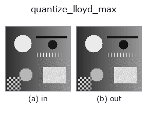

gray op• 資料種類:image → image
• 呼叫:fullseye.apply(img, "quantize_lloyd_max", a=0.5, b=0.5)(2-D 的模型是一張圖 + 兩個純量旋鈕 a,b∈[0,1])

*圖為在 128×128 合成輸入上實際執行的輸出。左為輸入，右為輸出。點雲以俯視散點顯示(亮度 = z)，一維序列為折線，體資料為沿 z 的最大值投影，影片為中間影格，複數影像為振幅；無法成像的回傳值直接顯示數值。*
掃描旋鈕 a(0.1 / 0.5 / 0.9，另一旋鈕取預設):
▸ quantize_lloyd_max: knob a sweep (docs site)
掃描旋鈕 b(0.1 / 0.5 / 0.9，另一旋鈕取預設):
▸ quantize_lloyd_max: knob b sweep (docs site)
換別的影像(合成場景 / 照片 / 硬幣。上排為輸入，下排為對應輸出。旋鈕取預設):
▸ quantize_lloyd_max: other inputs (docs site)
*第 4 欄是彩色 (H,W,3) 輸入。此運算子能正確處理顏色而不跨通道(不把顏色通道當作第三個空間軸摺積)。*
> 該運算子的說明尚無譯文,以下照原文給出。
入力の分布に合わせた最適な量子化(Lloyd–Max、1-D の k-means)。
`a が段数のビット数 1〜8、b` は反復回数(1〜20)。一様量子化が刻みを等間隔に
置くのに対し、こちらは画素値が混んでいる所に刻みを細かく置く。代表値は各区間の
重心、区間の境は隣り合う代表値の中点 —— この 2 つを交互に当てるのが Lloyd の反復で、
二乗誤差は単調に減る(増えることはない)。
一様量子化との差が出る条件: 入力のヒストグラムが偏っているとき。一様分布を
入れると一様量子化と一致するので、差が出ないこと自体が正しさの確認になる。
暗部に画素が集中した画像(影の多い検査画像、蛍光像)では同じビット数で誤差が下がる。
適用条件: (1) 出力は入力に依存した代表値の集合なので、画像ごとに符号表が違う
—— 別の画像と画素値を直接比べられない(比べたいなら一様量子化)。(2) 空いた区間は
そのまま残る(代表値が動かない)。(3) 反復は局所解に落ちうるが、1-D では初期値を
分位点に取れば実用上安定する。
• 範例資料目錄(下載 URL / 授權) —— 2-D 用 skimage.data(BSD/公有領域)加合成圖,3-D 給出真實資料源(Stanford/PDS 等)的下載 URL。
• 運算子來歷與參考文獻 —— 該運算子族所依據的研究/方法出處。
• 演算法的正典(作者・年份)與用途見上面的族使用指南。
下面的程式已確認可以執行(與圖相同的輸入)。在 Studio 說明中，此區塊會變成按鈕，可當場載入並執行。
quantize_lloyd_max 0.50 0.50
▸ Load this pipeline · Load & run
• gallery2d_gray_arith — py -3.11 examples/gallery2d_gray_arith.py
image 作為輸入)identity · gaussian · mean_box · bilateral · unsharp · median · min_filter · max_filter
gray)gamma · quantize_uniform · quantization_error · dither_ordered · dither_floyd_steinberg · companding_mu_law · banding_map · invert
*Provenance: ops.py — 2D 運算子登記表。本條目由 tools/opdocs.py md 自動產生(請勿手動編輯)。*
© 2026 Kazufumi Furuse — Fullseye operator documentation. Licensed under Apache-2.0.
{kind=link}
{kind=link}
{kind=link}